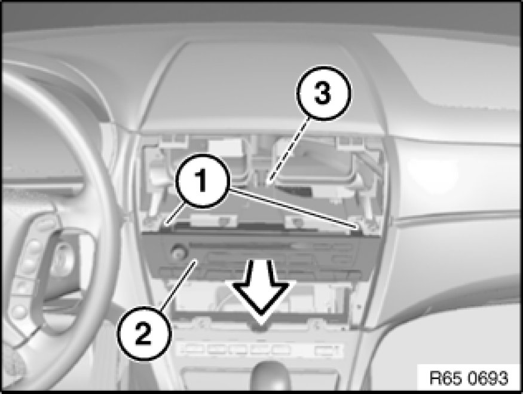

Radio/Stereo: Service and Repair
65 11 080 - Removing and installing/replacing radio receiver

Important!
Read and comply with notes on protection against electrostatic damage (ESD protection) 61 35 ... Notes on ESD Protection (Electro Static Discharge).

Necessary preliminary tasks:
- Remove operator unit for heater/air conditioner

Release screws (1).
Pull back radio receiver (2) slightly.
Unlock and disconnect associated plug connections, remove radio receiver (2).
Installation Note:
Make sure guide pin (3) is correctly seated in associated fixture.

Replacement:
Carry out programming/coding Programming and Relearning.